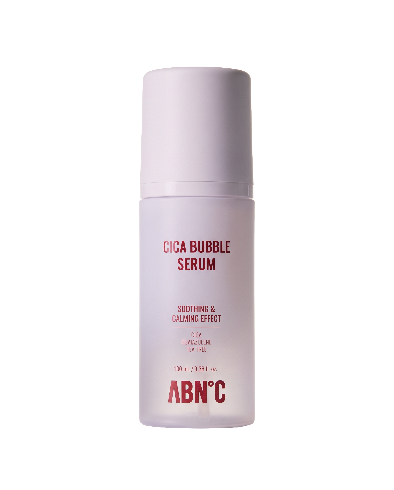
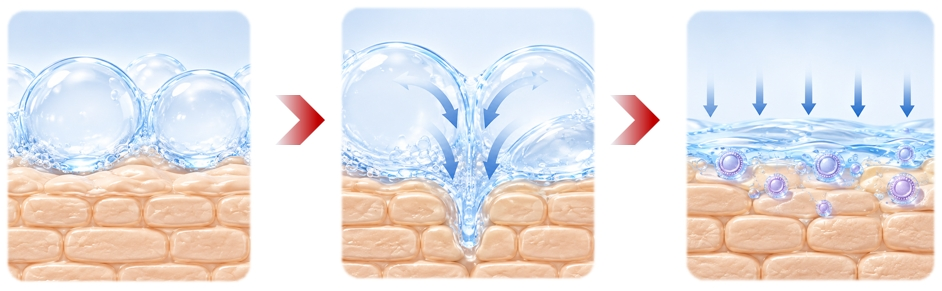
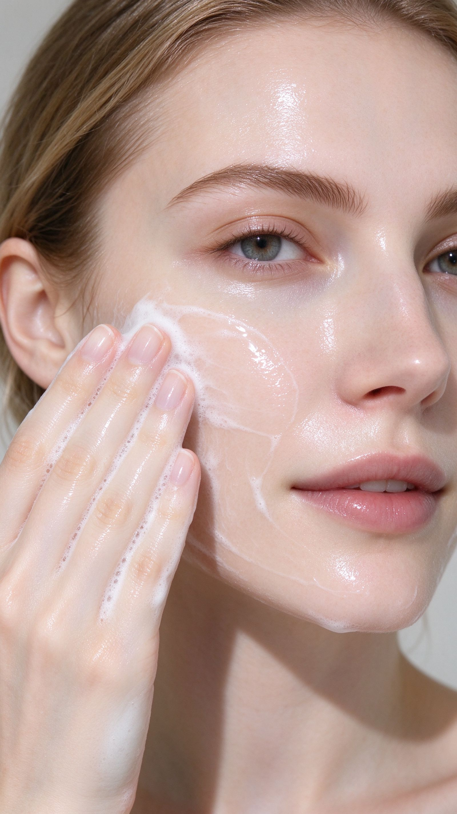

C³ CARE
CICA BUBBLE SERUM
A fine-foam serum for calm, hydrated, smooth-looking skin. Powered by C² ELIXIR™ Soothing Liposome Formula.

Make It a TikTok
Pick the concept that fits your style. Click "Copy Script" to grab the text and film your video.
MAIN PAIN POINT
"If your serum feels sticky and leaves your skin feeling greasy, you need to see this."
Visual Proof: Show oily, textured skin or wiping sticky serum.
Demo: "This is the ABN'C Cica Bubble Serum. It’s a water-light foam that absorbs 189% faster... zero stickiness."
CTA: "Say goodbye to greasy skin. Grab yours in my showcase."
RESULT FIRST
"Look at my skin right now. This is after using this bubble serum for just 2 weeks. No filter."
Visual Proof: Extreme close-up of clean nose and cheeks. Then show before pic.
Demo: "The foam bursts into your skin... Pore volume is reduced by 28% in 2 weeks."
CTA: "See the difference for yourself. Link below to shop!"
REAL-LIFE SCENARIO
"GRWM: My 5-minute flawless base routine for hot, humid mornings."
Show the scene: Fresh out of shower, coffee at vanity.
Demo: "I skip heavy creams. I just pump this magic foam... Watch how smoothly my foundation goes on."
CTA: "The ultimate primer. Tap the link to upgrade your morning routine."
ASMR MAGIC FOAM
"You need to hear this texture. Have you ever seen a serum pump out as a cloud of foam?"
Top-tier ASMR: Mic close to bottle for the "hiss". Extreme close-up of bubbles popping and turning to water.
Demo: "It's an ultra-fine bubble system... It feels like a cooling spa."
CTA: "Experience the magic foam. Shop now!"
vs. ordinary liquid serum
after 4 weeks
after 2 weeks
after 4 weeks
See It Before You Film It
Drag the slider to compare the look of redness and uneven tone before and after use. This is the visual proof your audience wants to see.
- Redness relief after 1 use (17.18% soothing result)
- Smoother-looking pore texture after 2–4 weeks
- Blemish and pigmentation area visibly improved
Ultra-Fit Bubble System
When the ultra-fine foam bursts, it opens absorption channels to deliver active ingredients deep into the skin without irritation.

The Signature Formula
C² ELIXIR™ Soothing Liposome Formula. A multi-layered synergy of 6 key ingredients working together for ultimate skin balance.
- 1CICA (Centella Asiatica)
Calm Care. Helps soothe the look of redness and supports skin comfort.
- 2GUAIAZULENE
Cool Care. Adds a cooling effect to soothe irritated skin.
- 3TEA TREE
Cure Care. Helps care for skin that feels stressed or unbalanced.
- 4ANTI SEBUM P / ANTI-PORE S
Pore & Oil Care. Patented ingredients designed to manage excess oil and refine pores.
- 5CERACARE AC-1 (5 Ceramides + Cholesterol)
Barrier Care. Supports the skin barrier and helps reduce moisture loss.
- 611 Types of HA + Fructan
Deep Hydration. Multi-weight hydration delivered deep into the stratum corneum.
Calm · Cool · Cure
Cica · Guaiazulene · Tea Tree
Creator Moodboard
Hover or tap to explore the visual vibes for your next video.




Clinically Tested
Based on OATC Skin Clinical Trial Center testing with 31 adult subjects (aged 20–60, Korean men and women).
| NO | Category | Clinical Parameter | Conditions |
|---|---|---|---|
| 1 | Absorption | Improved absorption vs. ordinary serum | Tested by OATC |
| 2 | Hydration | Moisture improvement down to 20th layer after 1 use | 2026.08.19–2026.09.03 |
| 3 | Soothing | Redness relief from irritation after 1 use | 2026.08.19–2026.09.03 |
| 4 | Pores | Improved pore depth, count, area after 2 weeks | 2026.08.19–2026.09.03 |
Contact Us
For product inquiries, collaboration, or media requests, reach out to us.
ABN°C | A BETTER NEW CHAPTER FOR A BETTER NEW YOU